Reference illustration — will be replaced with real defect photos over time.
The same defect — a hole, a shade mismatch, a skipped stitch — can turn up at more than one stage of making a garment. Instead of explaining it again on every topic page, every defect gets one clear entry here, and other topics in this Knowledge Library link back to this page.
This list will keep growing as this Knowledge Library expands. Below are the most common defects, grouped by where they usually originate.
How it looks: A faint vertical line or stripe running the length of the roll.
Why it happens: Uneven yarn tension at one feeder on the knitting machine.
How it looks: A small hole where a knitted loop has slipped off a needle.
Why it happens: A damaged or misaligned needle failing to hold the loop.
How it looks: A small, star-shaped burst of distorted loops.
Why it happens: A broken or bent needle catching the yarn incorrectly.
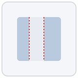
How it looks: A section of fabric with little or no stretch compared to the rest.
Why it happens: The lycra/elastane yarn breaking or running out at one feeder without being noticed.
How it looks: A fine, regular line pattern pressed into the fabric surface.
Why it happens: A worn or damaged sinker (the machine part that holds down loops during knitting).
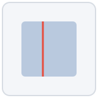
How it looks: A continuous lengthwise line or gap, distinct from a single dropped stitch.
Why it happens: One faulty needle repeating the same small fault every rotation.
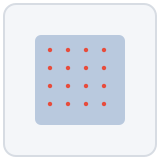
How it looks: Fine dust or fibre fluff knitted into the fabric structure itself.
Why it happens: A dirty knitting environment or poorly maintained machine.
How it looks: A visible gap or tear in the fabric.
Why it happens: Yarn breakage, sharp machine parts, or damage during handling.
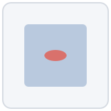
How it looks: A thick, lumpy spot in the yarn showing as a bump in the fabric.
Why it happens: Uneven yarn spinning.
How it looks: Noticeable colour difference within a roll, or roll to roll.
Why it happens: Inconsistent dyeing batches or poor shade-band sorting.
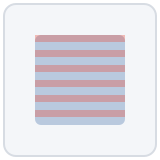
How it looks: Faint horizontal stripes or bands across knit fabric.
Why it happens: Yarn tension or count inconsistency during knitting.
How it looks: A visible mark or discoloration on the fabric surface.
Why it happens: Contamination from machine oil, dirt, or handling.
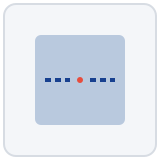
How it looks: A gap where a stitch is missing along an otherwise continuous seam.
Why it happens: Needle/timing issues, or sewing over a very thick seam intersection.
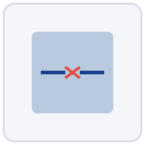
How it looks: A stitch that has snapped, leaving a visible break in the seam line.
Why it happens: Weak or wrong-grade thread, or thread damaged by needle heat.
How it looks: Unwanted rippling or gathering along the seam.
Why it happens: Uneven thread tension, or the fabric's natural behaviour under the sewing machine.
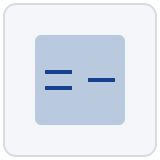
How it looks: A section of the seam has come apart, leaving a gap.
Why it happens: Insufficient stitch density, weak thread, or stress beyond seam strength.
How it looks: An unfinished edge that is not overlocked or bound.
Why it happens: Missing or incomplete seam finishing.
How it looks: A stray, untrimmed thread end left on the garment.
Why it happens: Rushed thread trimming during finishing.
How it looks: One collar point, pocket, or cuff sits differently from its pair.
Why it happens: Inconsistent placement during sewing or pattern marking.
How it looks: Pattern lines don't align across a seam.
Why it happens: Cutting or sewing without matching the print/weave repeat.
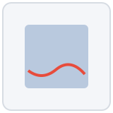
How it looks: The hem is wavy or hangs unevenly around the garment.
Why it happens: Inconsistent hem allowance or uneven stitching.
How it looks: Visible creases, shine marks, or a flattened texture after ironing.
Why it happens: Wrong iron temperature or pressure for the fabric type.
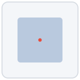
How it looks: A small hole or cut left by the sewing needle outside the seam line.
Why it happens: Needle damage or incorrect needle size for the fabric.
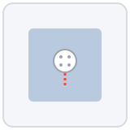
How it looks: A button that detaches under normal pulling force.
Why it happens: Insufficient thread wraps or incorrect attachment method.
How it looks: Zipper sticks, jams, or the pull separates from the slider.
Why it happens: Low-grade zipper, or damage during handling.
How it looks: Care, size, or origin label incorrect, illegible, or absent.
Why it happens: Mix-up during label cutting/attaching, or wrong label batch used.
Not every defect on this page carries the same weight. Whether a specific defect counts as minor, major, or critical for a given order depends on the product, the buyer's tolerance, and where on the garment it appears — see Garment Quality Basics for how that classification works.